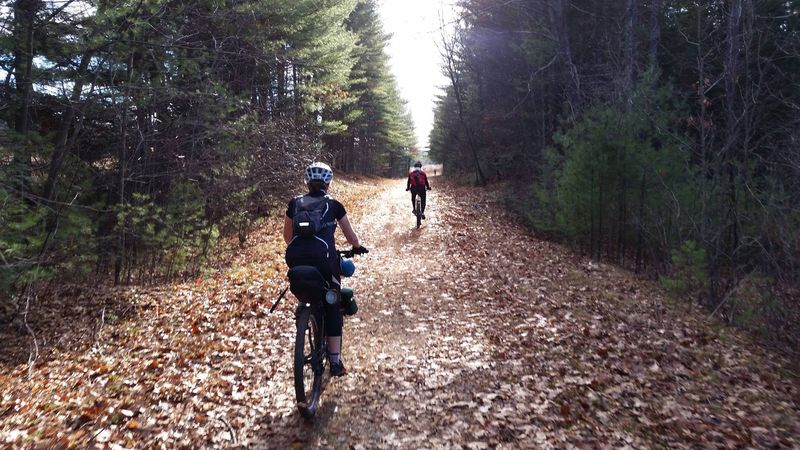
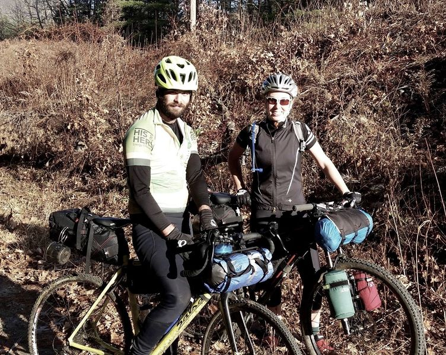
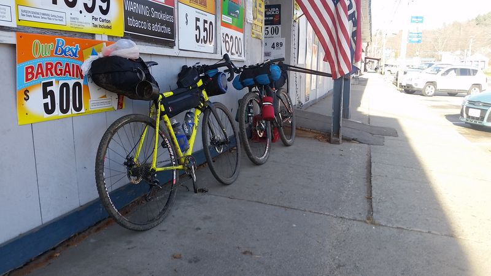
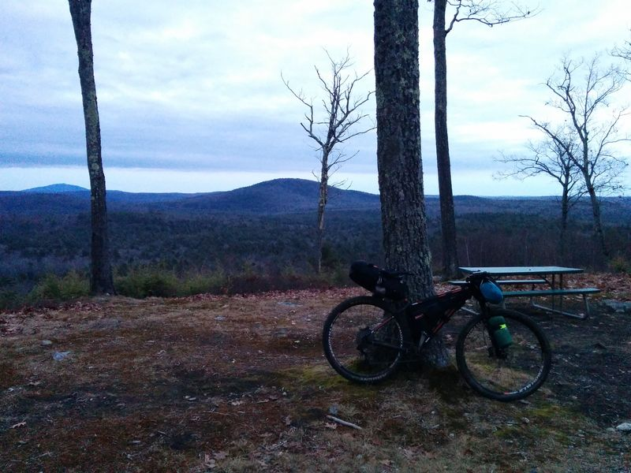
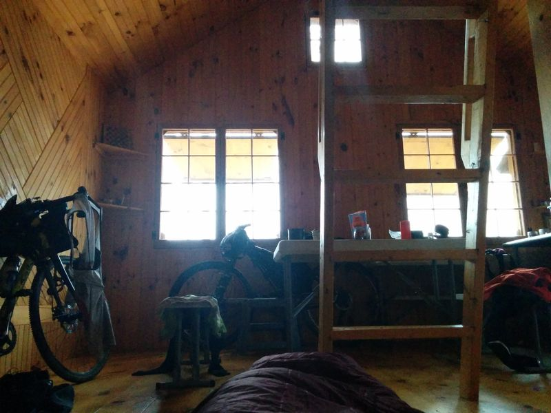
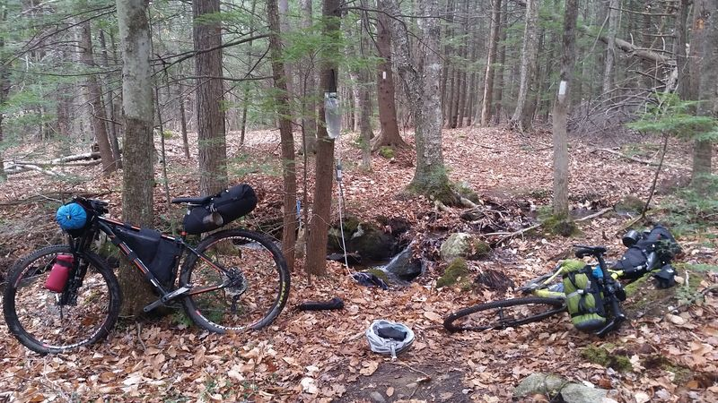
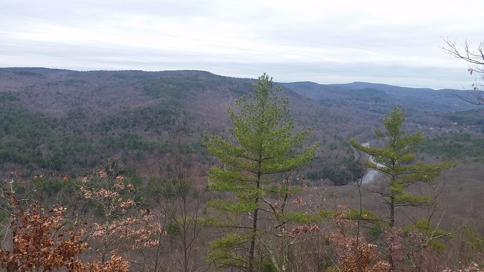
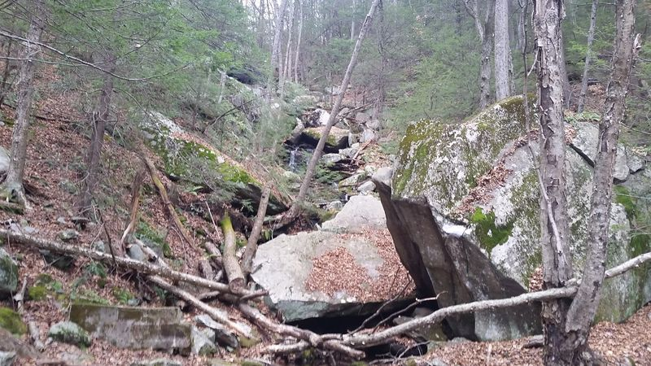
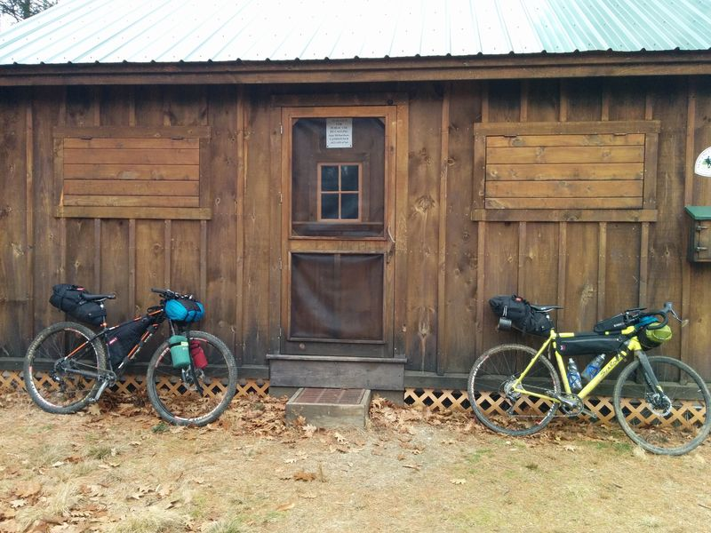

This has begun to feel like old hat. Sometime during the week, I tell Jonathan that I have nothing planned for the upcoming weekend or he says, “bikepack this weekend?” And next thing you know, we’re knee deep in elephants, as the saying goes (that’s not a saying). This time was no different. Jonathan wanted to try a 2-day bikepacking trip on his gravel/cross bike (the Salsa Warbird), and so our mission was to create a route that would be “doable” on such a steed. Jonathan is the type of rider that epitomizes the idea that it’s the rider, not the bike, that makes a difference. So, “doable” on a gravel bike for him, is what I would consider deeepppp mountain bike territory, which meant that almost anything was pretty much open. Our original plan was to redo an out and back trip from the VT border to the beautiful Grout Pond near Stratton Mountain, VT. This trip would have involved minimal planning, as we had made the trip back in September, but would have involved over an hour of driving, which I was loathe to do given the amount of time I spend commuting on a weekly basis.
Out of the blue, Jonathan mentioned that some friends of his were shuttling up to Westmoreland Depot, NH, to ride the gravel rail trail down to Hinsdale, NH. I took a look at their prospective route in Strava and immediately saw potential for splitting off from their route and continuing down to the Pioneer Valley. We arranged to hitch a ride with the group up into New Hampshire.
And with that, we were off. I took the original route in Strava, duplicated it, deleted the section from a place called Winchester, NH to Hinsdale, where that group was planning to end. On previous trips, Jonathan and I had stayed in a well maintained 3-sided shelter on the New England Trail (NET) in Wendell State Forest. I remembered from those plans that the NET had other overnight spots. Northfield State Forest looked like a good place to find camp on day 1, and it had tent platforms and a cabin. My original plan was to use the tent platforms, somewhat forgetting that Jonathan was going to be riding a skinny gravel bike and would appreciate the weight/space savings of not having to carry half a tent. So, I reserved the cabin.
Despite purporting to have mattresses, we both packed backup sleeping arrangements just in case. Once our sleeping arrangements were covered, we continued to figure out how to link back to our “starting point”: Blue Steel Bicycle Company in Sunderland, MA where I planned to leave my car. South of the cabin in Northfield, we found hiking trails that at least some other intrepid people had biked. I knew this from checking Strava’s heat map tool, which shows where others have biked before--making it a wonderful tool for finding or checking off-road routes. I figured out a link from where we would split off in Winchester to the cabin using this tool. Jonathan took over route-planning at this point, and connected us from Northfield State through to Wendell State Forest, at which point we could pick up our known trails. I turned to figuring out my packing situation. I packed my usual food choices: trail mix, ramen, jerky, oatmeal & peanut butter, and a cashew Kit Bar.
Clothes were a bit tough, because this December has been unseasonably warm. On the cusp temperatures are more difficult almost than straight cold temps, because you don’t want to overheat and you don’t want to carry more layers than you need. I opted for a lightweight merino base layer to sleep in, ¾ length bike tights to ride in, a merino cycling jersey, a convertible wind-breaker/vest, headband, three pairs of merino socks (all necessary!), and two different weights of full-fingered gloves. At the last minute I threw in full-length bike tights just in case and a pair of pants as a luxury item for sitting around at camp.
Day One: Rail Trail & Up
The day started off with a bang. I was mentally exhausted, coming off of a harrowing week of work. I was running 7 minutes late to meet at my local bike shop, BSBC, where I had to finalize my packing (Jonathan had borrowed my frame bag), and then ride a mile or two to a pickup spot. It was barely 37 degrees, and I was dressed for 45+. After a hard effort, we arrive at our pickup point just before our ride arrived. We took the short ride up to Greenfield where we met with 9 other riders who would be riding the rail trail. Bikes were loaded into a trailer and we headed to Westmoreland Depot, NH. Departing from the trailhead in Westmoreland were three fat bikes, one 29+, six traditional mountain bikes, and one gravel bike.
The Rail Trail
The first 26 miles of our trip was mostly flat or slightly graded, unpaved, but well-maintained gravel. Originally a railroad bed, the trail went through some really cool areas with tall rock walls. It was mostly a mellow trail with just some gushy or sandy areas.
After creating the routes I had loaded them to my new Garmin 520. Routes was one of the main reasons I purchased a Garmin after simply using my phone to log rides for so long. I was able to load the Strava routes that I had prepared for this trip onto my Garmin and was able to watch the map on the device. We had a nice time riding with the group on the rail trail, but by 1 in the afternoon, it was getting later in the day, and Jonathan and I had about 12 miles to go to reach our camp for the evening. One of the important differences about “winter” bikepacking is that daylight, especially in the woods, is gone by 4:30 at the latest. We needed to get a move on. We had no idea what the trail would be like after we departed from the group, but we knew it was up up up and I hadn’t charged my one light. Around 1:30 in afternoon we departed from the group and kicked it into high gear. As we neared Winchester, my map told me it was time to turn off of the rail trail, and so Jonathan and I headed into the town of Winchester to grab a quick “lunch” (i.e. gas station snacks).
Winchester was not much to look at, but we got what we needed from the gas station. Jonathan commented that it felt like we were in a bikepacking race, because we were scanning the town for goods, and quickly making our way through. An older gentleman asked us about our rigs, but we were in a rush to get moving, so he let us go with a comment to me about keeping Jonathan in line.
We stopped a bit farther down the street so that I could use the bathroom. I went inside only to see that the bathroom said, “Out of Order, do not use.” I was about to walk back out, dejected, but decided to ask the cashier if they happened to have another bathroom. To which he replied, “You can use that one.” A little sketched out, I decided to take my chances. I survived and we ate some snacks outside the liquor store on crates. Fine dining.
We rode three miles down the road, turned off onto a gravel road, and thus began our climb. We climbed up the gravel road, crossed the NH/MA border in the woods, and then turned off on a rocky, rutted ATV trail and continued our climb (mostly on foot at this point). We had a short reprieve downhill wherein we passed a parked ATV with a gun case. We arrived at the bottom of the hill as time continued to escape us. I offered a short reroute option up a power line road, but we stuck with the original plan, which was to go up a gravel road a bit and then turn onto the NET--the long distance hiking trail that connects from CT to the MA/NH border. I knew from the heatmap that bikes had ridden on the trail at some point, but routing onto hiking trails can be risky. The trail could be rocky, rooty, wind-y, chunky, etc. I called out that the map showed us approaching our turn. We looked down it, and Jonathan exclaimed, “Could we be so lucky?” The trail looked like a nice wide double-track. At some point in the day, with light running out and energy stores depleted, this section could have been a huge problem. Feeling lucky, we pushed on. At some point down the trail I realized that we had diverged from the route I had mapped on the Garmin but we hadn’t seen a turnoff. I told Jonathan this, but we kept moving. I knew that even if we weren’t on route, we would intersect with some power lines that would lead toward camp. When mapping our route originally I had made sure that the satellite images of the power lines showed a road. Worse case scenario, we could take that to the cabin. We came upon the powerlines, saw the road, and resigned ourselves to climbing the steep gravel. Jonathan found where our trail should have intersected with our road, and not long after we saw the turn off for the cabin. For most of the day, we had been in the flats or climbing in the woods. Through the trees I could see the area opening up, and suddenly we broke through the trees and I could see for miles upon miles.
When I reserved the cabin I was given a combination code for the lock. I turned toward the cabin and put in the code... Nothing. Checked the number, tried again. Nothing. Began to worry that without shelter, we’d be sleeping under the tarp Jonathan brought. I was at wit’s end after a long day of riding. Jonathan saw me struggling, came over, and fixed the lock. He opened the door and we were captivated by how nice the interior of the cabin was: beautiful wood floors, walls, and benches, a stainless steel counter, tables, and glass windows with shutters--all in a 15x15 foot space.
Using Jonathan’s small stove we cooked our respective meals and sat down to eat. I was still mentally tired from a long week and now I was physically tired on top of that. We had ridden a total of 36 miles on gravel, sand, and then rocky double-track. The weather may have felt like September, but my fitness level was squarely in December, and my legs were ready to hibernate (foreshadowing for day 2).
Day 2: Trending Downhill -- Resign Thyself to Climb
I woke up hungry and tired, but content. I was excited to eat my filling breakfast of peanut butter and oatmeal and to drink some green tea. The cabin was so luxurious that we got to a late start around 10:30am. In packing up, I started to attach my light to my handlebars, but the straps from my handlebar roll were in the way. Jonathan commented that I wouldn’t need the light today--assuming perhaps that we would obviously be able to complete the remaining 26 miles of our trip before dark. This, my friends, is called foreshadowing. The first 2.5 miles of our trip took one hour and 35 minutes. This was the rocky, rooty, curvy hiking trail that we had lucked out of the day before. My mental and physical exhaustion was catching up to me. My ankles were flopping around without ankle support, my mountain bike shoes were slipping on rocks, and at one point we were hiking up switchbacks at over 14% grade for over half a mile.
Nonetheless, the only option was to push on. I had run out of water and so we were on the lookout for a stream. Jonathan checked his maps and saw that we should be crossing a small waterfall soon. I still don’t know how he knows that specific information. Sure enough, we soon happened upon a small waterfall. Jonathan took out his Platypus 4L water filter that I believe we are both still enamored of because of the almost effortless ease with which it filters water compared to a handheld pump.
After refilling with water, I took a sip of freshly filtered spring water. There is something rather worrisome about running out of water, for good reason, and just the act of replenishing my stores makes me feel revived. As nice as that moment was, it did not, however, relieve any difficulty from the very steep hiking we had to do to get out of the woods and to a road. We finally reached the road and we saw that a quick jaunt down the road would bring us to another opportunity to join the trail farther south. After a chilly descent, we made our turn and I looked up what seemed to be an interminable climb. I’ve been learning to take street names at face value, and I think “South Mountain Road” has been the least subtle and most true to its name so far. At the top of this disastrous (on a loaded mountain bike) road climb, Jonathan found the NET again. The hiking of the morning and the previous day’s long exertion were making me quite tired already and I knew we were only a few miles into our 26 mile journey. Furthermore, for some reason I had not included this particular segment of trail in my route. I warned Jonathan that I was already tired and that this wasn’t on my route--which meant that I couldn’t vouch for (a) where it would end, (b) whether it was passable, or (c) whether anyone else had attempted it on a bike. After seeing that it turned to swamp a little bit down the trail, we rode down the road a little and turned onto the gravel road on my route.
We came upon our next trail turn and were a bit worried that it would turn out like the morning’s trials, but the only other option was a long road detour. I knew that such a detour would not make Jonathan very happy and I wouldn’t have enjoyed it much myself. Despite my tiredness, I didn’t want the day to be a wash. So we turned onto the NET once again. The next few miles were the most enjoyable, refreshing miles of trail in the whole trip. And it all led to a beautiful view at the top.
The next few miles were hard going again, with very rocky sections. Jonathan mentioned that the map ahead looked like we would be descending a waterfall, but that he hoped that wouldn’t be the case. It was.
At one stream crossing at which I had to carry my bike, I stepped my foot right into the water. I swore a few times, took off my shoe, removed my sock, and replaced it with a fresh sock from my bag. I mentally patted myself on the back for having had a total of 3 pairs of socks on this trip. We continued carrying and or leading our bikes down the trail.
We were now hours behind schedule. I had been physically tired all day. My leg muscles were feeling depleted and my calves were completely unused to the amount of hiking we were doing. When we reached the bottom of the waterfall, my body had actually resigned itself to this life. It was a feeling of: okay, I guess this is how it’s going to be. If I have to climb, I have to climb. I wasn’t going anywhere fast, but I could make it.
After the morning’s climb up South Mountain Rd, the road climb up Farley Rd to our next trail section was completely doable. Nevertheless, this day was not seeming to “trend downhill” as Jonathan promised it would. So, of course, our next step was to climb a closed gravel road that was completely unrideable at this point for me. I pushed my bike up this trail, very slowly I might add. After finally making it up that, we were treated to more gravel climbs in Wendell State Forest. Trending downhill, huh?
Finally, we reached the front gate of Wendell State Forest. Now I was familiar with the whole way back and knew that we truly were going to be riding downhill for the rest of the ride. Time to relax, right? Not really, because now it was 3pm and would be dark in just over an hour. Our original plan took us up Mt. Toby on our return trip. That was quickly nixed and we discussed the reroute options that would minimize road miles but get us back quickly. We decided upon one as we flew down the familiar gravel and paved roads of our final hour. Back on the road, I got a second wind and made good time. We reached Sunderland just as light was fading.
There were parts of this trip that really weren’t a whole lot of fun, I will admit. But the second it’s done? Totally worth it. You spend a weekend in the woods, traveling everywhere you need to by bike. Eating what you bring or what comes along. I had a lot of things on my mind that weekend relating to my regular life, but I spent it thinking about routes, and bikes, and muscles, and aches, and tired, and water, and eating. Being reduced to those wants and needs is refreshing in its own right.
